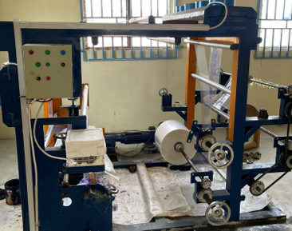
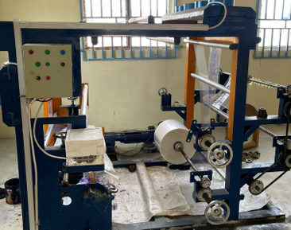

Pure Water. Clean Future.
We produce and recycle waste sustainably for a better tomorrow.
Get in TouchWe produce and recycle waste sustainably for a better tomorrow.
Get in TouchAmama Premium Water & Recircling transforms plastic, leather, and metal waste into high-quality, functional products, helping retailers meet the growing demand for sustainable and eco-friendly solutions. We address two major challenges: The lack of reliable recycled material suppliers in the retail market. The environmental harm caused by improper waste disposal. Our recycled product lines support retailers’ sustainability goals and appeal to environmentally conscious consumers. In addition, we offer consulting services to help businesses adopt recycling programs and eco-friendly practices. By combining manufacturing and advisory services, Amama promotes a circular economy in Nigeria and serves as a trusted partner in the sustainability journey.
Download PROFILEWe produce and distribute bottled and sachet water using advanced purification technologies, ensuring that our water an eco-friendly manner. meets the highest international health and safety standards. Our bottled and sachet water is designed for purity and convenience, providing communities with essential hydration in
Amama Premium Water and Recircling actively contributes to global environmental efforts by purchasing plastic, leather, and metal waste and transforming it into new, functional products.
We go further by offering consulting services to businesses interested in implementing recycling programs and sustainable practices. Our team educates partners on eco-friendly strategies and helps them incorporate recycled materials into their product lines.
Take a look at our facilities, processes, and our team in action.
 
